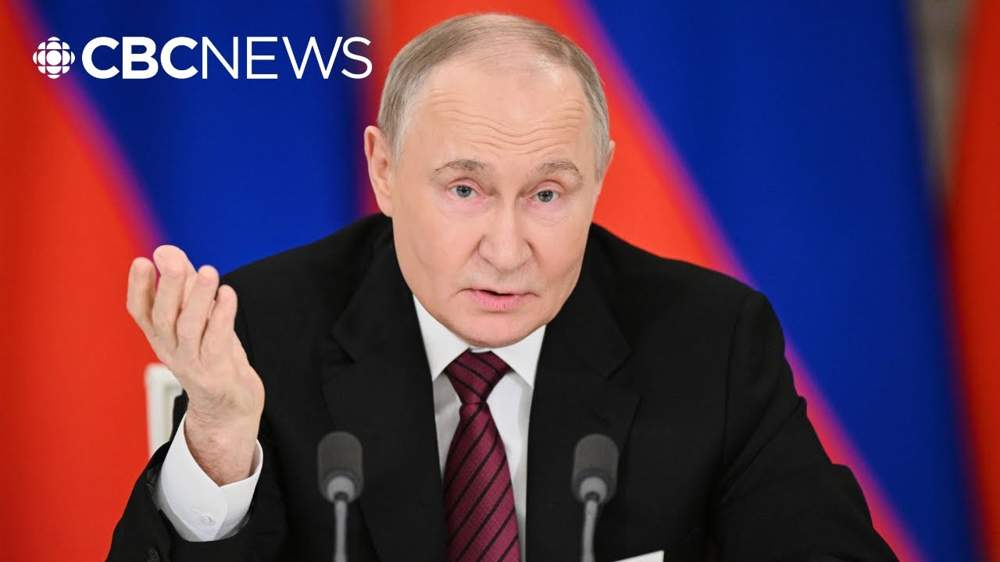

【普京反击乌克兰联盟停火计划，呼吁和平谈判】
Summary: Ukraine and its allies demand a 30-day ceasefire or new sanctions, while Putin proposes peace talks without preconditions, as Russia resumes attacks.
摘要： 乌克兰及其盟友要求30天停火，否则将实施新制裁，而普京提议无条件和平谈判，同时俄罗斯恢复攻击。

⏱️ Estimated Reading Time: 8 min
Ukraine, backed by Canada and other countries known as the Coalition of the Willing, have set a midnight deadline, Eastern European time, for an unconditional 30-day ceasefire to kick in, or else Moscow will face a new wave of crippling sanctions.
乌克兰在加拿大等“意愿联盟”国家的支持下，设定东欧时间午夜为最后期限，要求无条件30天停火生效，否则莫斯科将面临新一轮严厉制裁。
In a rare overnight address, Vladimir Putin laid out a counter proposal, no immediate pause in fighting.
在一次罕见的深夜讲话中，弗拉基米尔·普京提出反建议，不立即停战。
Instead, he's suggesting the first face-to-face talks since the early days of the war.
相反，他提议自战争初期以来的首次面对面会谈。
We propose to the K authorities to resume the talks they stopped and terminated in uh April 2022.
我们向基辅当局提议恢复他们在2022年4月停止并终止的谈判。
I'm referring to direct talks without any preconditions and we propose to start immediately on next Thursday on the 15th of May install.
我指的是没有任何先决条件的直接谈判，我们提议立即在下周四5月15日开始。
Now, as Putin was laying out his proposal for peace talks, Russian forces ended a unilateral 3-day truce, launching 108 drones right across Ukraine.
就在普京提出和平谈判建议时，俄罗斯军队结束了单方面3天停火，向乌克兰全境发射了108架无人机。
According to Ukrainian officials, all but seven were either shot down or fell short.
据乌克兰官员称，除7架外，其余均被击落或未命中目标。
But those that got through led to several injuries and damage to a number of homes.
但那些突破防线的无人机导致多人受伤和数栋房屋受损。
CBC's Anna Cunningham is following the story for us from our London bureau.
CBC的安娜·坎宁安从伦敦分社为我们跟踪报道此事。
Anna, remind us what is Vladimir Putin proposing and why is he doing this now?
安娜，请告诉我们弗拉基米尔·普京在提议什么，以及他为何现在这样做？
Well, Natasha, the Russian president is not a man who likes ultimatums.
娜塔莎，俄罗斯总统不喜欢最后通牒。
And that's exactly what he got Saturday from uh the so-called coalition of the willing, including Canada.
而这正是他周六从所谓的“意愿联盟”（包括加拿大）那里得到的。
We know Ukraine's allies said, "Sign up for a 30-day unconditional ceasefire starting Monday or face new sanctions."
我们知道乌克兰的盟友表示：“签署从周一开始的30天无条件停火协议，否则将面临新制裁。”
And this really was President Vladimir Putin's reply.
而这正是弗拉基米尔·普京总统的回应。
He chose to deliver it at 2:00 a.m. from inside the Kremlin.
他选择在凌晨2点从克里姆林宫内部发表这一回应。
And on the face of this, it's fairly consistent with the Kremlin's message.
从表面上看，这与克里姆林宫的一贯立场相当一致。
President Putin claiming he wants peace now, but only on his terms.
普京总统声称他现在想要和平，但必须按照他的条件。
Clearly that was a message for Keefe and its allies.
这显然是对基辅及其盟友发出的信息。
But I think also this was a message directed at the White House because Putin, we know, wants to keep on side with President Donald Trump.
但我认为这也是针对白宫的信息，因为我们知道普京希望与唐纳德·特朗普总统保持友好关系。
I mean, he's met with uh his special adviser, Steve Wickoff, four times this year, and he wants the US president not to see him as an obstacle to peace.
他今年已与特朗普的特别顾问史蒂夫·威科夫会晤四次，希望美国总统不将他视为和平的障碍。
So, he's keen for the US to lift sanctions and boost Russia's economy.
因此，他迫切希望美国解除制裁并提振俄罗斯经济。
But the issue for President Putin is that ultimatum of a ceasefire Monday and the fact that it came with President Trump's approval.
但普京面临的问题是周一的停火最后通牒，以及这一通牒得到了特朗普总统的认可。
We've seen the US flip-flop in terms of its approach to Russia and Ukraine to the point of saying it's on the brink of withdrawing from all talks.
我们看到美国在对俄乌问题的态度上反复无常，甚至表示濒临退出所有谈判。
So here today you have Russia saying we're ready for talks before a ceasefire.
因此今天俄罗斯表示准备在停火前进行谈判。
Now Ukraine's president Vladimir Zilinski has given a cautious response.
乌克兰总统弗拉基米尔·泽连斯基作出了谨慎回应。
Take a look at this.
看看这个。
He says it is a positive sign that the Russians have finally begun to consider ending the war.
他表示，俄罗斯人终于开始考虑结束战争，这是一个积极信号。
The entire world has been waiting for this for a very long time.
全世界已经等待这一刻很久了。
And the very first step in truly ending any war is a ceasefire.
真正结束任何战争的第一步就是停火。
He goes on to say, "There's no point in continuing the killing, even for a single day.
他接着说：“继续杀戮毫无意义，哪怕只有一天。”
We expect Russia to confirm a ceasefire fulllasting and reliable starting tomorrow, May the 12th." and Ukraine is ready to meet.
我们希望俄罗斯确认从明天5月12日开始全面可靠的停火，乌克兰已准备好会晤。
So Natasha Keev is skeptical that this is any sort of olive branch from Moscow.
因此娜塔莎·基夫怀疑这是否是莫斯科伸出的橄榄枝。
It wants that ceasefire first before talks, but that's the opposite of what Russia's proposing.
乌克兰希望先停火再谈判，但这与俄罗斯的提议相反。
Okay, really complicated situation continues to remain complicated.
好吧，极其复杂的局势依然复杂。
Let's talk about what we're seeing in terms of other reaction to what Putin is proposing.
让我们看看各方对普京提议的其他反应。
Yeah, the German Chancellor Friedrich Mertz has said it's a good sign, but it's far from sufficient.
德国总理弗里德里希·默茨表示这是个好迹象，但远远不够。
Let's show you what the French President Emanuel Macarron's been saying.
让我们看看法国总统埃马纽埃尔·马克龙的表态。
He posted this.
他发布了这样的内容。
There can be no negotiations while weapons are speaking.
在武器发言时不可能进行谈判。
There can be no dialogue if at the same time civilians are being bombed.
如果平民同时遭到轰炸，就不可能进行对话。
A ceasefire is needed now so that talks can begin for peace.
现在需要停火，以便开始和平谈判。
And we know that Prime Minister Mark Carney has made clear Canada's position.
我们知道马克·卡尼总理已明确加拿大的立场。
Uh he posted this Saturday saying, "We continue to support a 30-day ceasefire in Ukraine without conditions or delays.
他周六发文称：“我们继续支持乌克兰无条件、无延迟的30天停火。”
A path to peace has been proposed.
和平之路已被提出。
An endless end to this senseless and brutal war is possible.
这场无意义且残酷的战争有可能彻底结束。
Now Russia must come to the table in good faith.
现在俄罗斯必须真诚地回到谈判桌前。
If Russia chooses to reject or delay the ceasefire, will pursue further and stronger sanctions."
如果俄罗斯选择拒绝或拖延停火，我们将实施更多更严厉的制裁。”
And Natasha, we've just had confirmation from the State Department in Washington, confirming that US Secretary of State Marco Rubio is actually going to be in Turkey later this week for a informal NATO foreign minister's meeting about the Russia Ukraine war.
娜塔莎，我们刚刚得到华盛顿国务院的确认，美国国务卿马可·鲁比奥本周晚些时候将赴土耳其参加关于俄乌战争的北约外长非正式会议。
Coincidentally, those dates are the same as Putin's suggestion of peace talks in Istanbul.
巧合的是，这些日期与普京提议在伊斯坦布尔举行和谈的时间相同。
But look, the immediate question for Ukraine's allies is if there's no ceasefire tomorrow, do they follow through with increasing sanctions?
但眼下乌克兰盟友面临的问题是，如果明天没有停火，他们是否会跟进加强制裁？
And Keev, we know, has been clear today, no ceasefire, then no meeting in Istanbul.
我们知道基辅今天已明确表示，没有停火，就没有伊斯坦布尔的会议。
CBC's Anna Cunningham in London.
CBC记者安娜·坎宁安在伦敦报道。
Thank you, Anna.
谢谢你，安娜。